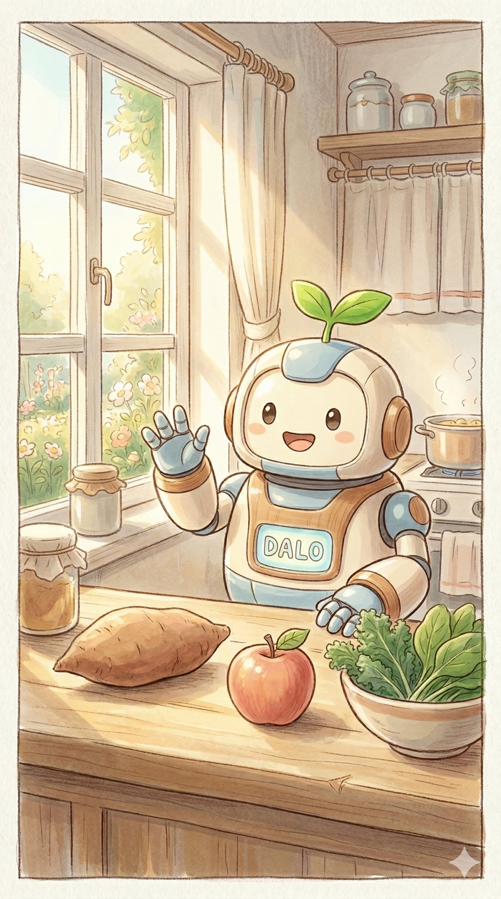

姊姊早安！今天外面有點涼喔 🌬️
大樂已經幫妳把配方的水溫設定在 40 度了。
準備好跟我一起「打鐵」了嗎？
出門採買前，勾選家裡還有剩的，大樂幫妳自動扣除數量喔！
姊姊，這不是考試，憑直覺滑動就好。
讓我們來看看今天身體的「氣候」是如何呢？
姊姊今天似乎吹了點冷風，身體有點沉重呢。不用擔心，大樂已經幫妳把今天的綠拿鐵基底換成溫豆漿，並加入了去寒的核桃！
專屬姊姊的健康陪伴
✨ 發現新版本：v1.1.0！